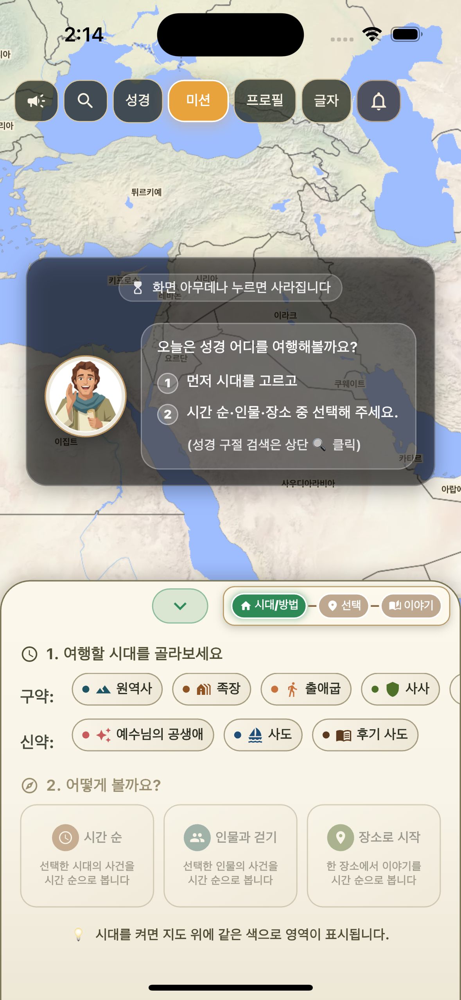
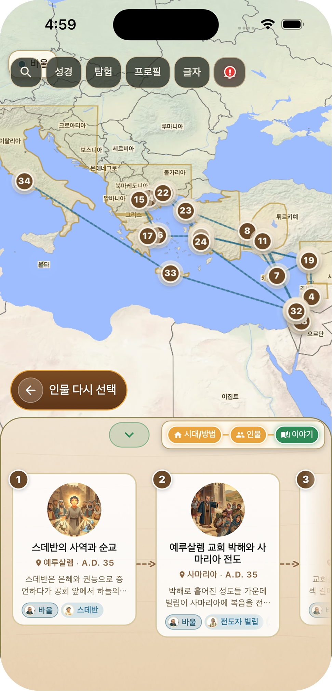
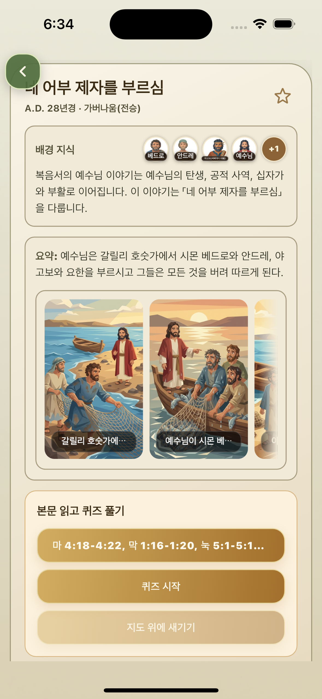
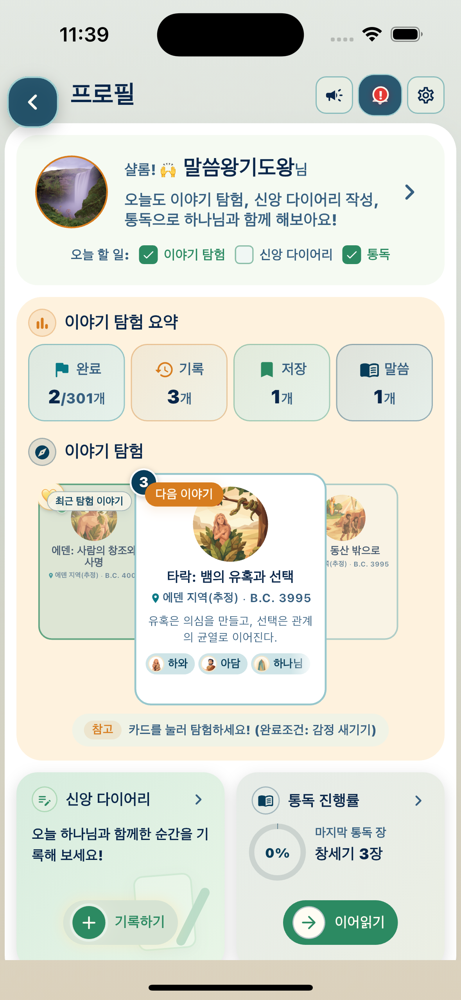

01
시대와 관점을 선택하면 다양한 시각으로 성경을 확인할 수 있어요
시대를 먼저 선택하고 시간순, 인물과 걷기, 장소로 시작 중 하나를 고르며 성경의 사건을 다양한 시선으로 확인할 수 있습니다.

Story Bible
지도위에서 펼쳐지는 이야기
시대를 고른 뒤 시간순, 인물과 걷기, 장소로 시작하기 세 가지 관점 중 하나를 선택해 성경의 사건을 더 입체적으로 바라볼 수 있어요.
성경을 장면 하나씩이 아니라 연결되는 흐름으로 이해하도록 돕는 앱입니다.

App Preview
시대와 탐색 방식 선택에서 시작해 지도, 사건 상세, 퀴즈, 신앙 다이어리까지 이어지는 여정을 카드에 담았습니다.
01
시대를 먼저 선택하고 시간순, 인물과 걷기, 장소로 시작 중 하나를 고르며 성경의 사건을 다양한 시선으로 확인할 수 있습니다.

02
선택한 시대, 인물, 장소에 해당하는 모든 사건을 지도 위의 궤적을 따라 살펴보며 어디서 어떤 사건이 발생했는지 입체적으로 이해할 수 있습니다.

03
네 컷 이미지로 사건을 쉽게 이해하고, 직접 성경 구절을 읽고 퀴즈를 푼 뒤 지도 위에 내 마음을 이모티콘으로 새겨 먼 이야기를 나의 이야기로 만들 수 있습니다.

04
지금까지 푼 퀴즈 통계, 저장한 이야기와 말씀을 확인하고, 신앙 다이어리로 어떤 사건을 어떤 감정으로 묵상했는지 한눈에 볼 수 있습니다. 오늘 하루 예배, 말씀, 기도 기록도 남겨 나만의 신앙 다이어리를 관리할 수 있습니다.
